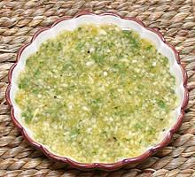

 |
Mojo - CubanCuba - Mojo | ||||
| Makes: Effort: Sched: DoAhead: |
9 oz ** 55 min Best |
Mojos of this type are essential for Cuban cuisine. This one works well as a dip, but is also used as a marinade, particularly for pork. A mojo with oil is used for chicken, fish and beef (see Note-2). | |||
|
|
8 1 12 1 1 |
cl T t c |
Garlic Oregano, fresh Peppercorns, black Salt Bitter Orange juice (1) |
Cuban restaurants in Los Angeles, California use a Cuban-California Mojo for dip, table condiment and sauce for roast chicken. Make - (55 min - 25 min work)
|